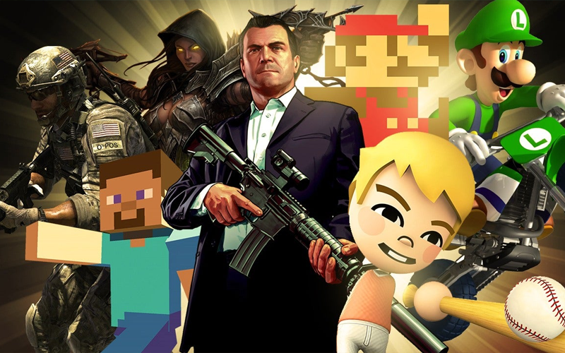
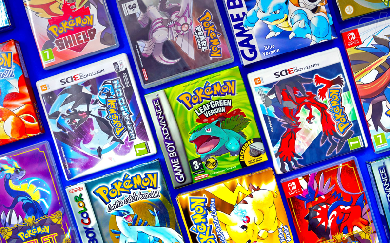
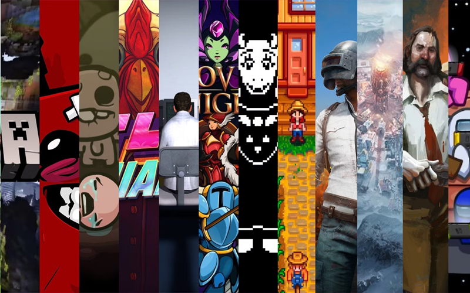

What Inspires Me in Game Development
Throughout my journey, I've been deeply inspired by a variety of
games, developers, and creative projects that have shaped my approach
to game development. Below, I've highlighted some of the key
inspirations that continue to fuel my passion.

My Love For Video Games
First and foremost, my biggest inspiration would simply be my love
for video games.
Why it Inspires Me: Video games have always been a huge part
of my life. They’ve been a way to have fun, escape, and dive into
different worlds. Through gaming, I’ve connected with people who
share the same passion, and some of my closest friendships started
because of a shared love for video games.
I want to be a
game developer to create experiences that capture the joy, wonder,
and connection I felt growing up with games. Making worlds that
inspire others and bring them the same excitement and memories I
cherished.

Pokemon Series (Video Games)
Why it Inspires Me: The Pokémon games have been a huge
inspiration for me in game development, especially since they're the
first games I played.
I love how they combine
exploration, strategy, and storytelling into a world that feels both
vast and personal. The way Pokémon encourages players to discover,
collect, and connect with the game world pushes me to create
projects that are fun and engaging.
It’s the blend of
simplicity and depth in Pokémon that motivates me to build games
that spark curiosity and offer a sense of adventure.
Why He Inspires Me: Pirate Software, also known as Thor is a
game developer and twitch streamer who is known for creating the
game Heartbound.
Throughout his streams and online
content, he always advocates for people to make games and helps them
by providing resources, support and a platform for indie game
developers to showcase and foster their skills.
His
content is perfect for anyone thinking about creating video games as
he is incredibly inspiring to all game developers.

Indie Games Scene
Why it Inspires Me: The indie games scene has shown that
small teams can create meaningful and innovative experiences. Titles
like Celeste and Hades demonstrate the power of
passion-driven projects and it's very inspiring to see smaller indie
companies create such an impact.